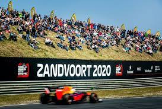

Hoofdpagina
Formule 1, officieel de FIA Formula One World Championship, is de hoogste klasse in het formuleracen. Deze tak
van autosport betreft het racen in speciaal voor dit doel ontwikkelde auto's met open wielkasten. Formule 1
wordt meer algemeen tevens gezien als de hoogste klasse in de autosport.
Het eerste wereldkampioenschap werd verreden in 1950. In het eerste seizoen waren er maar 7 races op de
kalender en nu 22.
In het seizoen 21/22 doen er 10 teams mee met elk 2 coureurs.
De Fédération Internationale de l'Automobile, meestal aangeduid als FIA, is een internationale federatie
van nationale auto-, motorsport- en motorclubs. Het hoofdkwartier van de FIA is gevestigd in Parijs,
Frankrijk.
Op 20 juni 1904 werd de Association Internationale des Automobile Clubs Reconnus opgericht in Bad Homburg,
Duitsland, de voorloper van de FIA. Deze club moest alle gebruikers van interne verbrandingsmotoren
vertegenwoordigen, zowel in de lucht als op het land, op twee en vier wielen. De belangrijkste taak van de net
opgerichte club was het verlagen van de snelheden die bereikt werden tijdens races, om het grote aantal
dodelijke ongelukken te verminderen.
Het aantal Grands Prix per seizoen heeft sterk gevarieerd per jaar. Het eerste seizoen in 1950 bestond uit slechts zeven races, door de jaren heen is de kalender verdrievoudigd. Hoewel het aantal sinds de jaren tachtig op ongeveer zestien is blijven steken waren er negentien races in 2005. Traditioneel organiseert elk land een grand prix die de naam van het land krijgt toebedeeld. Als een enkel land twee grands prix in een seizoen organiseert krijgen ze verschillende namen. Zo krijgt een Europees land dat twee races organiseert voor de tweede race de naam "Grand Prix van Europa" toebedeeld.
